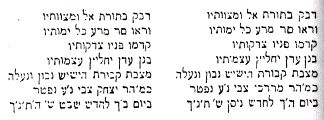

V. BÖLÜM
Sevi ailesinin İzmir’deki izleri -Yahudiler ve Dönmeler - Dil ve fonetik başkalaşım - Sözdiziminin başkalaşımı - Dönmelerin arşivleri - İkinci Abdülhamid ve dönmeler - Önemli şahsiyetler - Yahudiliğe dönüş üzerine iki deney - Dönmelerin güncel durumu.
Sevi ailesinin İzmir’deki izleri
Karataş’ta bulunan ve Birinci Dünya Harbi sırasında (1914-1918) park haline getirilen eski İzmir mezarlığında mevcut binlerce kabir arasında Sabetay’ın babası Mordehay Sevi ve muhtemelen Mordehay’in erkek kardeşi Izak Sevi’nin kabirleri de bulunuyordu. Bu iki mezar birbirinin yanında yer alıyordu ve yazıt olarak aynı metni taşıyorlardı. Izak’ın ölümü ile Mordehay Sevi’nin ölümü arasındaki zaman farkı iki ay üç gündü.
İşte 1903 yılında bu kabirdeki araştırmalarımız esnasında kopya ettiğimiz bu yazıtın metni:

İzmirli Yahudi cemaati hakkında 1903 yılında topladığımız notlar arasında şu ibareleri keşfettik: “Otuz sene önce, başlarında Kordoso ailesinin bir üyesinin bulunduğu İzmirli birkaç Yahudi her sene Sabetay Sevi’nin ölümünü anmak için bir tören düzenliyorlardı”. 1932 yılında İzmir’e yaptığımız seyahat esnasında bu törenin konusu ile ilgili ayrıntıları sorduğumuzda hiçbir şey hatırlamadıklarını ve Kordoso ailesinin şehirden ayrıldığını söylediler.
Irgat Pazarı semti yakınlarında, haham başılığın lokaline yakın sayılacak bir mesafede, bugün bile “Lamba Sokağı” adlı bir sokak bulunuyor. Sokağa girildiğinde Sevi’nin Cortigo’su adında bir cortijo (çeşitli ailelerin bir arada oturduğu birkaç odalı bir ev) gözden kaçmıyor. Hâlihazırda bu evde kumaş satıcısı Hayim Katan oturmaktadır. Resimli Dünya dergisine göre{135} Tişorel ailesi eskiden Sevi’nin evinde ikamet etmiş.
Yahudiler ve dönmeler
Selanik’te:
Sabetaycılar genel olarak maaminim genel adı altında bilinirler. Selanikli Yahudiler tarikatın meydana geldiği üç guruba aşağıdaki nitelikleri atfediyorlardı:
Yakubilere: Arapados, tıraşlılar anlamında İspanyolca sözcük
Karakaşlara: Honieros, burundan konuşan (hon hon)
Kapancılara: Kavalyeros veya Terpuşlu, ilk sözcük İspanyolca, ikincisi Türkçe, her ikisi de uzun saçlı anlamında.
Ayrıca onları borekas{136} adıyla da tanımlıyorlardı çünkü dönmeler her İspanyol Yahudi’si gibi bu isimle anılan çörekten yerler.
Edirne’de
Edirneli Yahudiler, dönmeleri anlamını Türkçe’deki sazan balığından alan ve sözcüğün sonundaki “icos” çoğul küçültme eki ile sazancık anlamına gelen sazanikos adıyla anıyorlardı. Bu alegorik çağrışım, iki dinli olanlar ve (Yahudi ve Müslüman) tatlı suda ve tuzlu suda yaşayanlar olarak (sazan sadece tatlı su balığıdır) dönmeleri sazan balığına benzetme eğilimindeydi. Suda çeşitli dolambaçlar yaparken vücudunda çeşitli renkler göstermesi bakımından sazaniko’yu anımsattığı düşünülüyordu.
Aynı şehrin Yahudileri, dönmelerin ikamet ettiği sokağa caleja des gaicos (genç horozlar sokağı) diyorlardı. Bunun nedeni, sosyal izolasyon ve kendi aralarında evlenme gibi unsurlar nedeniyle sinirli olduklarından, çok esniyor olmalarıydı.
Bu şehrin dönmeleri, Yahudileri küçümsemek için onlara “Çıfıt” (olumsuz anlamda Yahudi) diyorlardı. Buna karşılık, Yahudiler ise onları “eski çıfıt” (eski Yahudi) olarak çağırıyorlardı.
Dil ve fonetik başkalaşım
Dönmelerin az çok önemli guruplar halinde İstanbul, Edirne, Selanik ve İzmir’de yaşadıkları bilinir. Selanik Sabetaycı Metropol olarak tanınır; bu nedenle günlük Türk dilinde Selanikli sıfatı da dönme anlamına gelir.
Dönmeler din değiştirdikleri ilk andan başlayarak 19’uncu yüzyılın ilk yarısına kadar evde daima Yahudi İspanyolcası konuşmuşlar ve Türklerle birlikte olduklarında ya da onlarla temas halindeyken Türkçe konuşmuşlardır.
80.000 Yahudi’nin yaşadığı Selanik’te, Birinci Dünya Savaşının başlangıcına kadar (1914-1918), dönmelerin tümü ve Yahudi olmayan nüfusun büyük bir kısmı, o zamanlar neredeyse şehrin ortak dili olan Yahudi İspanyolcası konuşuyorlardı.{137}
Yahudi İspanyolcasını Selanik’te yaygınlaştıran bu ayrıcalığa rağmen, bu şehrin dönmeleri kendi okullarını Türk eğitim temeline göre tesis ettiler ve yeni nesil başlangıçta tarikatın hiçbir geleneğini kaybetmeden yetişti. Bu gençler Yahudi İspanyolcası yerine Türk yazısını kullanıyorlardı ve bu durum İbranicenin ve Yahudi İspanyolcasının fonetik değişime uğramasına sebep oldu.
İbranice yazısını ve Yahudi İspanyolcası denilen yazıyı tanımayan bu gençler o çağda tarikatın çeşitli dinî ve ahlaki emirlerini ve İbranice ve Yahudi İspanyolcası duaları kopya etmek için Türkçe yazıyı{138}, yani Arap yazısını kullandılar. Arap yazısı İbranice gibi, Sami dili olduğundan sesli harf yetersizliği vardı ve sözcükleri düzgün telâffuz etmek için noktalama yapmadan seslendirme yapılamıyordu.
Dua kabul edilen İlahilerin İlahisi’nin II. Bölümü (İbranice metin) Arap alfabesi ile yazılmış ve Resimli Gazete’de yayınlanmıştır{139}. Fonetik başkalaşımın çarpıcı bir örneğidir.
Sözdiziminin başkalaşımı
Günlük yaşamda Türkçe konuşmuş olan ve henüz konuşan dönmeler bu dili Yahudi İspanyolcası modeline göre konuşarak Türk sözdiziminin bir kısmını bozmuşlar ve bozmaya devam etmektedirler. Bu durum Türk okullarda eğitim alan dönmeler için söz konusu değildir. Okuma yazma bilmeyen bir dönme ben eve gittim demek yerine şöyle konuşur; Ben gittim eve. Yarın bize kim gelecek? demek yerine, kim gelecek yarın bize? der. Türkçe’deki “mi” soru ekini genellikle kaldırır. Böylece yazdı mı? Demek yerine, sesle soru tonlaması yaparak yazdı? der, vs.
Dönmelerin arşivleri
Bilgin dostumuz S.A. Rosanes, Sabetaycı tarikata yabancı olan ve 1915 yılında Karakaş gurubunun arşivlerini ziyaret eden ilk ve son kişi olmuştur. Biz ona ilk ve son diyoruz zira 1917 yılında Selanik’i kasıp kavuran yangından sonra bu arşivlerden bugüne hiçbir şey kalmamıştır. Kaybolan bu arşivler gurup başkanının evinin alt katında korunan sandıklarda saklanmaktaydı. Bu sandıkların muhteviyatının en büyük kısmı Yahudi İspanyolcası dilinde ve diğerleri İbranice yazılmıştı ve gurubun ilk kuruluş yıllarına kadar uzanan belgelerdi.
İşte Rosanes’in orada ilginç bulduğu bazı örnekler.
a) Başı ve sonu eksik, büyüden, dinî hükümlerden bahseden ve Zohar’dan bazı paragraflar ihtiva eden İbranice yazılı bir elyazması.
b) Gerçek Yahudilerin maaminim’ler olduğunu ispatlamak için yazılmış ve Sabetay’a yazılmış kasidelerle dolu elyazması halinde çeşitli şiirler ihtiva eden Yahudi İspanyolcası dilinde kırk küsur örnek.
c) Raza De Mehemamıta. Bu eser Nehemya Hayon’un eserinin Yahudi İspanyolcası tercümesidir. Bu eserin bizzat Sabetay tarafından meydana getirilip Hayon tarafından tercüme edilen orijinal eser olma ihtimali de mevcuttur.
d) Zohar Akadoş. Zohar’ın üç kısım halinde Yahudi İspanyolcasına tercümesi.{140}
e) Itgalot. Bu broşür, Pesah gecesi 24.000 meleğin Sabetay’a yaptığı ifşaatla ilgilidir. Melekler hep birlikte şöyle demişlerdir: “Sen bizim senyörümüzsün, sen bizim kralımızsın, sen bizim Mesih’imizsin vs.”
f) Ganshoşhanim. Amacı Sabetay’a olan inana güçlendirmek olan vaazlar.
g) Deraşot. Çeşitli hatiplerden toplanmış vaazlar.
Diğer iki sandığın içindekiler Torah’ın (Eski Ahit’in geleneksel olarak Musa’ya atfedilen ilk beş kitabı) çeşitli örneklerinden ve Selanik baskısı bir tam Tevrat’tan ve yine Selanik baskısı bir dua kitabından ibaretti. Bu kitapların yanında Odessa baskısı Atsat Tsvi ve Kitzour Tsitat novel tsvi gibi Sevi’ye yapılan saldırılan anlatan eserler vs. de mevcuttu.{141}
II. Abdülhamid ve Dönmeler
II. Abdülhamid’in kötü yönetimi gerek ülke içinde gerekse dışında birçok düşman edinmesine neden oldu. Selanik şehri Jön Türkler hareketinin merkeziydi. Ordu ve halk Sultanın mutlakıyetçi yönetimine karşı çalışırken, dönmelerin büyük bir kısmının kendisine karşı yönetilen hareketin başında olduğunu öğrenen Sultan, Sabetay Sevi hakkında ayrıntılı bilgi getirilmesini emretti. Hahambaşının Kaymakamı Moşe Levi’yi çağırarak Yahudi dininin farklı tarikatlarının neler olduğunu sordu. Hahambaşı kaymakamı verdiği yanıtta iki tane tarikat bulunduğunu, birinin Tevrat’ın ve Talmud’un hükümlerine, diğerinin ise sadece Tevrat’ınkilere uyan tarikatlar olduklarını açıkladı.
Sultan, “Ya, pekiyi Sabetay kim?” diye sordu.
Hahambaşı kaymakamı verdiği yanıtta Sabetay’ın Yahudilerle hiçbir ilişkisi olmayan müritler edinmiş, sahte bir Mesih olduğunu söyledi. Selanik baş hahamı ile yazışıp konuya ilişkin daha kesin bilgiler edinmek için Sultan’a yalvardı ve Majesteleri kabul etti.
Moşe Levi, Abdülhamid’in emirleri doğrultusunda, Selanik hahambaşısı Yakub Hananya Kovo’ya İbranice dilinde bir mektup yazarak Sabetay Sevi’nin yaşamı ve faaliyetleri hakkında bilgi talep etti. Selanik hahambaşısı Sultan’ın arzusu ve emrini bir an önce yerine getirmek için acele ederek Moşe Levi’ye İbranice dilinde bir cevap yazdı.
Moşe Levi’nin küçük oğlu Yeşua ben Elnekave hahambaşı Kovo’nun mektubunu{142} Türkçe’ye çevirdi ve büyük babası çeviriyi Sultan’a sundu. Sultan konuyu etüt edeceğini söyledi.
Birkaç gün sonra, Moşe Levi saraya davet edildi. Sultan ona Sabetay Sevi’nin kişiliğini etüt ettiğini ve onun bir veli (mülhem) olduğunu söyledi. Sultanın bu gibi insanlara, yani, veli, derviş, büyücü, falcı, astrolog vs. gibi tiplere hiç itimadı olmadığını unutmamak gerek.{143}
Abdülhamid, Moşe Levi’ye bu işin parasal hacminin ne olduğunu sordu. Hahambaşı kaymakamı verdiği cevapta, Efendilerinin arzuları için kendisinin ve Selanik’teki dostunun gönüllü olarak çalıştığını söyledi. Bu yanıttan memnun olan Sultan Moşe Levi’ye 200 Türk lirası altın verilmesini emretti.
Anlaşılan, Abdülhamid, Jön Türk partisine üye dönmelerin peşine düşmeden hayır dualarını kazanmak istediği için bu mülhemin, yani Sabetay’ın biyografisinden etkilenmek istedi.
Önemli şahsiyetler
Dönmeler Türk okullara ya da Türkçe eğitim veren kendi okullarına gitmeye başladıklarından beri, onları hükümet görevlerinde yer alıp liberal kariyerler yapmaya iten bir hareketlenme yaşadılar. Özel mesleklerinde olduğu gibi resmi görevlerinde de fark edilir oldular. Bir dönme tersane-emini görevini yürütüyordu. 1908 Türk anayasasından sonra, Mehmet Cavid ve Nüzhet Faik maliye bakanı ve Mustafa Arif eski Osmanlı İmparatorluğu içişleri bakanı oldular. Cavid malî bilgisi ile tanınıyordu. Muslihiddin Adil, Millî Eğitim bakanlığında müsteşar ve Hukuk fakültesinde profesördü. Ahmet Emin, seçkin bir gazeteciydi. Vatan gazetesini yönetiyor ve yazı yazıyordu, aynı zamanda edebiyat fakültesinde profesördü. Parlamentodaki milletvekilleri; üniversite ve yüksekokullardaki profesörler; basındaki gazeteciler; barodaki avukatlar; Tıp fakültesindeki doktorlar vs. vs. Sabetaycı cemaat mensuplarının soyundan gelen kişilerdi.
Yahudiliğe dönüş üzerine iki deneme
Türkiye’de yaşayanlarla hiçbir bağı olmayan Yunan Selanik’inin dönmelerinden birkaçı, geleneksel Yahudiliğe dönmeyi denediler. Şehrin hahamları durumu öğrenince, bu durumun tarikatın bazı örf ve adetlerinin muhalif olduğu olayını öne sürerek dini formaliteleri yapmayı reddettiler. Ret etmelerinin sebebi, karıların değiştirildiği büyük mumların söndürülme törenini ima etmeleri ve bu törenin bu birliklerde doğan çocukların meşruiyetini müphem bırakması nedeniyle, “gayri meşruluk asla ebediyetteki birliğe katılamayacak, hatta onuncu nesli bile ebediyetteki birliğe katılamayacak”{144} diyen Tevrat ayetine ters düştüğünü öne sürmeleriydi.
İkinci deneme daha ziyade politik düzenle ilgili. 1914 –1918 Birinci Dünya Savaşından sonra İstanbul şehri itilaf devletlerinin askerleri ile doldu. Bu çeşitli devletlerin makamları hizmetlerine tercüman niteliği ve telgraf memuru olan Yunanları ve Ermenileri alıyor ve Yahudileri reddediyorlardı, çünkü Yahudiler Türklerle aynı davayı savunuyorlardı.{145} Bu makamlar Yunan ve Ermeni tüccarların seyahat etmelerine izin veriyor, Yahudilere yasaklıyorlardı. Birkaç gösteri yürüyüşünden sonra bu yasaklamalar son buldu ve Yahudiler serbestçe dolaşmaya başladılar. Yahudi orijinlerinden istifade etmek isteyen birkaç dönme seyahat müsaadesi istedi. Talepleri kabul edilmedi.
Dönmelerin güncel durumu
1912 Balkan savaşından sonra, yani Selanik’in Türk hâkimiyetinden Yunan hâkimiyetine geçmesinden sonra dönmelerin durumu yeni bir safhaya girdi. Sabetaycıların tarikat metropolü olarak gördüğü bu şehir, Türkiye’den ayrı bir konuma sahip gibiydi ve bu durum, o zamana kadar bütünlük içinde yaşayan Sabetaycıları rahatsız ediyordu.
Balkan savaşı ile birlikte seyreden 1914-1918 Dünya Savaşı, itilaf ülkelerinin, Türkiye’nin de taraf olduğu guruba karşı kazandığı zaferle sonuçlandı. Mağlup ülkeler, Türkiye haricinde, yenilgiye boyun eğdiler. Yenilgiyi kabul etmeyen Türkiye, Kemal Atatürk’ün girişimiyle bağımsızlık mücadelesine başladı ve bu savaş 23 Temmuz 1923’de Lozan antlaşması ile Türkiye lehine sonuçlandı. Kapitülasyonların esiri eski Osmanlı İmparatorluğunun kalıntıları üzerine inşa edilen, hür ve bağımsız, bilinçli, yeni bir Türkiye doğuyordu. İtilaf devletlerinden biri de Yunanistan olduğu için ve savaşla doğrudan ilgisi olması nedeniyle, Türk ve Yunan hükümetleri sonradan meydana gelecek anlaşmazlıklardan kaçınmak için Türk ve Yunan nüfusun mübadelesine karar verdiler.
Müslüman ve Selanikli Türk nüfusun arasında yer alan dönmeler, takasa karşı çıkarak Yunan hükümetine başvurdular ve Sabetaycı kökenlerini öne sürüp mübadeleye tabi edilmemeyi talep ettiler. Ticaretle uğraşan bir unsurdan yakayı sıyırmak isteyen Atina yönetimi dönmeleri sıradan bir Türk gibi kabul edeceklerini açıkça beyan ederek mübadeleye tabi olduklarını bildirdi. Yunanistan’ın çeşitli şehirlerindeki dönmeler de aynı muameleye maruz kaldılar ve başka ülkelere gitmek için Yunanistan’ı terk edenlerin yanı sıra, Türkiye’ye gelerek bir merkezde toplananlarla birlikte çeşitli şehirlere yerleşenler de oldu.
Aslında, en büyük cemaatleri İstanbul’da bulunur, İzmir’de küçük bir cemaat vardır. Çeşitli küçük guruplar şuraya buraya dağılmışlardır. Sabetaycı öğretilere olan bağlılıkları yaşlarına göre değişiklik arz eder. Yaşlılar kitaba ve başkanlarının emirlerine hâlâ bağlıdır, olgun yaştaki kimseler Yahudi dinine yakınlaşmışlardır ve kökenlerinin bilincinde olan gençler liberaldir. 9 Ab orucu da şu şekilde uygulanmaktadır Sabetay’ın emirlerini takip eden ilkler bu günü neşeyle kutlarlar; İkinciler aksine oruç tutarlar ve üçüncüler 9 Ab’ın tarihinden haberleri olmasına rağmen oruç tutmazlar. Beş sene önce Bulgaristan’ın kaplıcalarından birinde bulunan bir dostum bana şunu anlatmıştı: “Bu kaplıcada epeyce kalabalıktık ve doğuda konuşulan her dil orada mevcuttu. Bir kadın Türkçe konuşarak bana yaklaştı ve orucun tarihini sordu. Bilmediğimi ve kendisine bilgi verebilecek başka kişilere sormasını ona söyledim. Bunu reddetti. Dört gün sonra, tekrar beni buldu ve dedi ki: «Nasıl? Yani dün tanit (oruç) olduğunu bilmiyor muydunuz?; sizi masada gördüm, oysa ben bütün gün oruç tuttum». Benim Yahudi olduğumu nasıl anladığını ona sorunca, beni bir başkasıyla Yahudi İspanyolcası konuşurken gördüğünü ve kendisinin (dönmeymiş) 9 Ab’ın kesin tarihi için bilgi almak üzere bana başvurduğunu söyledi. Yahudi oruçlarını ve bayramlarını kutlama konusunda çok titiz olduğunu ve dönmelerin çoğunun kendisi gibi olduğunu da ilave etti.”
Türkiye dışında yaşayan dönmeler mevcuttur. Onlara Balkan ülkelerinde, Avrupa’da ve Amerika’da rastlanır. Bu ülkelerin hepsinde, yaşadıkları şehrin Yahudi cemaatleriyle ilişkileri olsun olmasın, bu dönmeler birer Yahudi’dir.